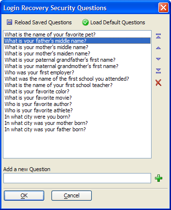

Login Security Recovery Questions Dialog
The Login Security Recovery Questions dialog allows you to define user questions that will help confirm a user's identity. The Lost Data Recovery Options > Security Questions on the Security Settings dialog calls the Login Security Recovery Questions dialog.
To add a new question, enter the question into the Add a New Question text box and click
 .
.To delete a question, select it in the list and click
 .
.To discard changes and reload a saved list of questions, click Reload Saved Questions.
To discard changes and load the default list of questions, click Load Default Questions.
To change the position of a question in the list, select it and click
 (move first),
(move first),
 (move up),
(move up),  (move down), and
(move down), and  (move last).
(move last).Click OK to save your edits and exit.

Limitations
Web publishing applications only.
See Also